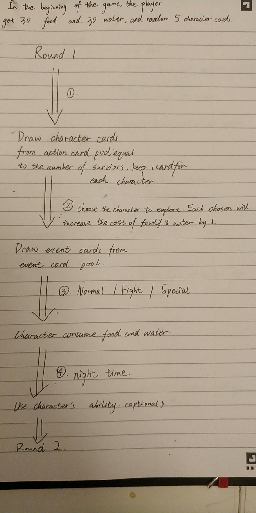
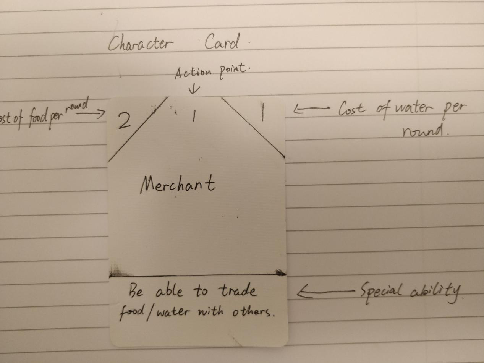

(Midterm) Non-Digital Game: Escape

It's a game about give up.
Backgronud: A group of air crash survivor landed in a forest, lack of supplies, seeking for the way out.
Player draw a few cards at the beginning of the round, the cards contain item cards, character cards and event cards. Skills, consume of water/food per round is written on character cards.
At first, the player have all the character cards and the item cards. As the game goes, puzzles occur(draw from the deck randomly), then the player must use his cards to solve the problem. But after items are used up, all character left will be frail and can't survive from another strike.
It's hard to choose whether to use the items or to abandon some character cards(each round they consume food and water) .
Might be oppressive sometimes, but that's what I want to show in game.
Try to get to the destination with more character cards left.
Rules:There are 3 main elements in this game.
1.Food 2.Water. 3.Action point
If food or water goes to 0, the characters will die.
As the game goes, player need to choose to wisely use the character to go explore. More survivors go explore means more consume, but less will increase the risk of trouble.
To solve a problem occur in event card, the explore team need to have more action point(add up) than the required point on event card. In this way, player need to balance the stock of stuffs and the number of survivors in explore team The number of character card in the card pool should be about 15,
so that every game the player will have a different experience.
If the explore team don't have enough action point an event card required, the members in the team will die.
As the games goes, after a few rounds, it is very likely that there is a short of food or water for the whole team. Player need to wisely abandon some "useless" character during night time. However this also means the action point in total will get less.
